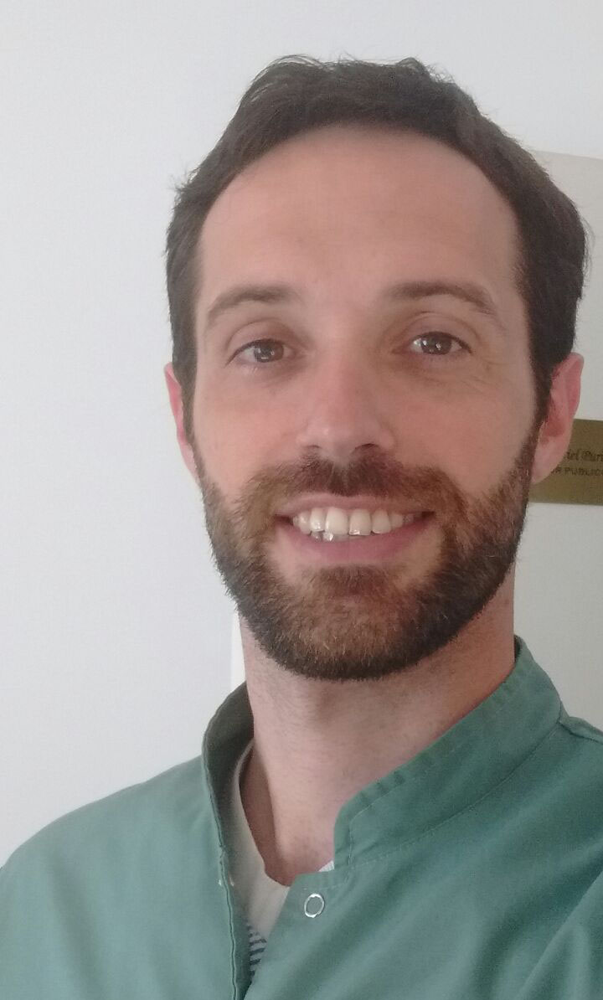

Las cirugías dentales pueden definirse como intervenciones realizadas por un cirujano oral y que se caracterizan por la injuria de tejidos y utilización de anestesia. Existen numerosas razones porque las personas deben ser sometidas a una cirugía dental. Podemos clasificar las cirugías dentales en tres categorías; Tenemos por una parte las cirugías dentales que se realizan siguiendo criterios estrictos de salud; están además las denominadas “cirugías estéticas dentales” que buscan hermosear y mejorar el aspecto de la cavidad bucal y por ultimo tenemos aquellas cirugías dentales que buscan aunar ambos criterios.
Ortodoncia es una especialidad de la odontología que se encarga de la corrección de los dientes y huesos posicionados incorrectamente. Los dientes en mala posición y los que no muerden correctamente unos contra otro son difíciles de mantener limpios, corren riesgos de pérdida precoz debido a caries y enfermedades periodontales, y ocasionan una tensión extra sobre los músculos de la masticación que puede generar dolores de cabeza, síndrome de ATM y dolores varios en cuello, hombros y espalda. Además, los dientes girados o posicionados incorrectamente desmerecen nuestro aspecto.
La terapia endodóntica consiste en la extirpación total de la pulpa dental. Se aplica en piezas dentales fracturadas, con caries profundas que presentan lesiones en su tejido pulpar que se conocen como pulpitis. Esta es irreversible y la única opción terapéutica es la extirpación total de la pulpa dental, y la obturación tridimensional del conducto dentario. La pulpitis está frecuentemente provocada por caries dentales profundas que alcanzan la pulpa dental y producen infección en la misma, originando dolor continuo y permanente que aumenta con estímulos fríos, calientes, alimentos dulces o ácidos.
El objetivo del blanqueamiento dental es eliminar las manchas externas de los dientes causadas por la acción del tabaco y los pigmentos contenidos en los alimentos y bebidas, especialmente si no se mantiene una higiene dental adecuada. En el esmalte de los hay millones de poros microscópicos que, con el tiempo, permiten el paso de compuestos orgánicos de modo que penetran en la dentina y provocan el proceso de decoloración.
Los implantes dentales son cilindros de titanio que se colocan en el maxilar para actuar como raíz y ser el anclaje de uno o varios dientes artificiales. Luego, sobre el implante se instala un emergente o perno. Finalmente, sobre el perno se coloca una corona de porcelana que simula a la perfección a un diente natural. Según sea su situación, usted puede reemplazar uno o varios dientes con los implantes dentales.
La odontopediatría es la rama de la odontología encargada de tratar a los niños. El odontopediatra será, por tanto, el encargado de explorar y tratar a niños y recién nacidos. También se encarga de detectar posibles anomalías en la posición de los maxilares o dientes para remitir al ortodoncista, especialista en ortodoncia, y de hacer un tratamiento restaurador en caso de necesitarlo. El tratamiento restaurador principalmente se compone de tratar los traumatismos, usar selladores que tienen la función de obturar levemente los surcos y fisuras de las piezas dentales sin apenas quitar material dental para evitar posibles caries, y en tratar las caries producidas y sus consecuencias.
La Operatoria Dental es la rama de la Odontología que estudia el conjunto de procedimientos que tienen por objetivo devolver al diente a su equilibrio biológico, cuando por distintas causas se ha alterado su integridad estructural, funcional o estética. La materia tiene como principal objetivo el de hacer competente al alumno para que enfrente problemas dentarios derivados de caries, traumatismos, etc., elaborando preparaciones de cavidades cuyos diseños se rigen por principios biomecánicos universalmente establecidos, tratando en todo momento de mantener la vitalidad pulpar, y finalmente devolviendo al diente su forma anatómica mediante el proceso de restauración.
La periodoncia es una especialidad médico-quirúrgica odontológica que estudia la prevención, diagnóstico y tratamiento de las enfermedades y condiciones que afectan los tejidos que dan soporte a los órganos dentarios (encía, ligamento periodontal, cemento radicular y hueso alveolar) y a los substitutos implantados, para el mantenimiento de la salud, función y estética de los dientes y sus tejidos adyacentes. Las principales enfermedades periodontales que afectan a una dentición son la periodontitis y gingivitis. Hoy en día con el advenimiento de la implantología la periodoncia también es la encargada de la prevención y tratamiento de las enfermedades periimplantares como la periimplantitis. La enfermedad periodontal se manifiesta como una gingivitis (inflamación y sangrado de la encía sin afectar el hueso) o periodontitis, donde ocurre la destrucción del hueso que soporta el diente. Si no es tratado a tiempo puede ocasionar la pérdida de los dientes.
La prótesis dental es un dispositivo diseñado para reemplazar los dientes perdidos. Los dientes son una parte muy importante de nuestra apariencia. Si nos falta un diente, ya nos sentimos desanimados, inseguros de nosotros mismos. Pero si perdemos más? En caso que dejamos la boca sin dientes se corre el riesgo de mal oclusión y una serie de otras condiciones adversas y cambios físicos, ciertamente. Para evitar estas situaciones, hay que ir al técnico que le ayudará a elegir la prótesis dental adecuada para todas las situaciones.
Ubicación del consultorio
Cnel. Dorrego 487, Monte Grande . Esteban Echeverria, 1842. Buenos Aires, Argentina. Tel: (011) 2003-3049